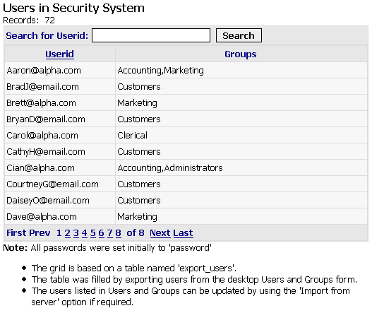

GRD_LOGINDATA Grid Component
Purpose
The GRD_LOGINDATA component to show a list of users in the security system on the LOGINLIST.A5W page, which is opened by a link from the LOGIN.A5W page.

The GRD_LOGINDATA component in the Grid Builder
Description
The GRD_LOGINDATA grid component on a table named export_users. The table was filled by exporting users from the desktop Users and Groups form. The users listed in Users and Groups can be updated by using the Import from server option if required before exporting the records to the export users table. The grid contains a Quick Search that uses the "Contains" style of searching. This means that a search looks for the value anywhere in the field.
Containers
Notable Component Property Settings
|
Property |
Description |
|
Quick Search > Has Quick Search |
"True" |
|
Quick Search > Position |
"In Grid" |
|
Quick Search > Field(s) to search |
"Userid" |
|
Quick Search > Search style |
"Contains" |
|
Quick Search > Control type |
"Textbox" |
|
Freeeform Edit Region > Below Grid |
Changed to Note: All passwords were set initially to 'password' |
See Also